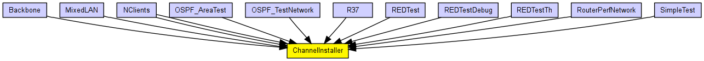
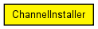

Replaces channel objects in the network.
This module is a temporary solution until the NED infrastructure gets extended to accomodate channel classes.
The following diagram shows usage relationships between types. Unresolved types are missing from the diagram. Click here to see the full picture.
The following diagram shows inheritance relationships for this type. Unresolved types are missing from the diagram. Click here to see the full picture.
| Backbone (network) | (no description) |
| MixedLAN (network) |
Sample Ethernet LAN containing eight hosts, a switch and a bus. |
| NClients (network) | (no description) |
| NClients (network) | (no description) |
| OSPF_AreaTest (network) | (no description) |
| OSPF_TestNetwork (network) | (no description) |
| R37 (network) | (no description) |
| REDTest (network) | (no description) |
| REDTestDebug (network) | (no description) |
| REDTestTh (network) | (no description) |
| RouterPerfNetwork (network) | (no description) |
| SimpleTest (network) | (no description) |
| Name | Type | Default value | Description |
|---|---|---|---|
| channelClass | string |
e.g. "ThruputMeteringChannel" |
|
| channelAttrs | string |
params for the channel class, e.g. "format=N (U)" |
| Name | Value | Description |
|---|---|---|
| display | i=block/cogwheel_s |
// // Replaces channel objects in the network. // // This module is a temporary solution until the NED infrastructure // gets extended to accomodate channel classes. // simple ChannelInstaller { parameters: string channelClass; // e.g. "ThruputMeteringChannel" string channelAttrs; // params for the channel class, e.g. "format=N (U)" @display("i=block/cogwheel_s"); }